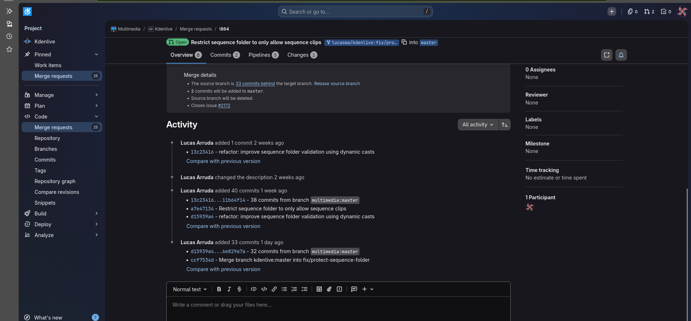
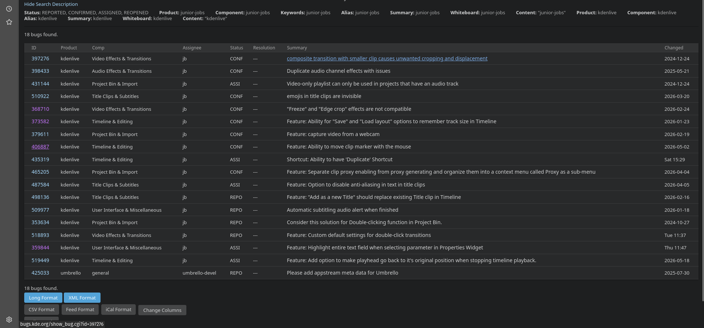
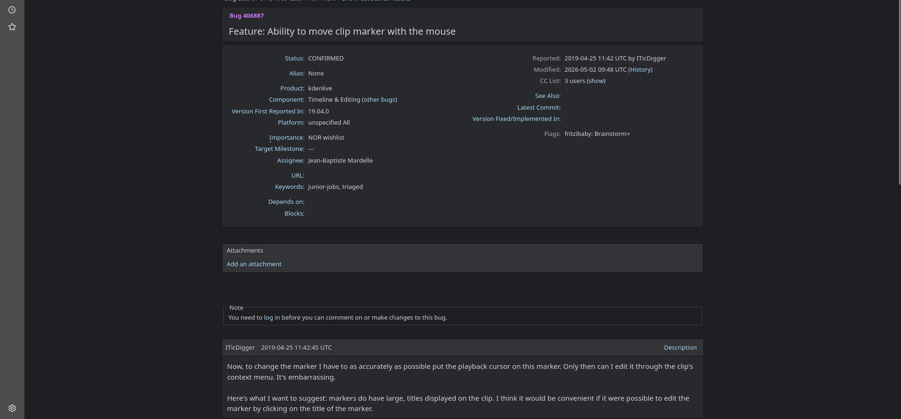
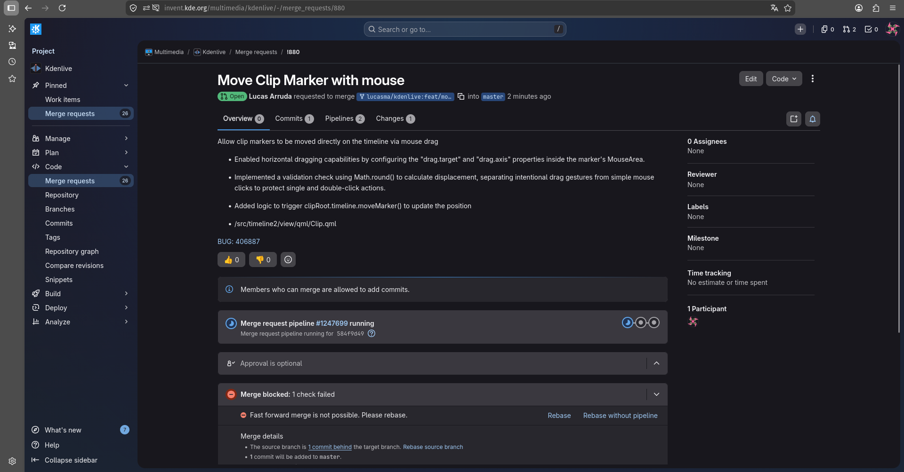

Diário de Bordo – Lucas
Disciplina: GERÊNCIA DE CONFIGURAÇÃO E EVOLUÇÃO DE SOFTWARE
Equipe: GCES 2026.1 – Kdenlive
Comunidade/Projeto de Software Livre: Kdenlive
Sprint: Sprint 2 (12/05/2026 – 25/05/2026)
Matrícula: 231035464
GitHub: @lucasarruda
KDE Invent: @lucasma
1. Resumo da Sprint 2 (12/05/2026 - 25/05/2026)
A Sprint 2 foi focada exclusivamente na contribuição para o projeto de código aberto Kdenlive. O trabalho envolveu o monitoramento do Merge Request aberto na sprint passada e a triagem de novas demandas no ecossistema do KDE. A atividade principal consistiu em resolver um problema de usabilidade na linha de tempo aberto desde 2019, aplicando lógica em QML para permitir o arrasto de marcadores de clipe por meio do mouse, sem impactar as interações de clique já existentes no editor.
1.1 Acompanhamento do Merge Request da Sprint Anterior
Durante o período, foi realizado o monitoramento contínuo do Merge Request aberto na Sprint 1, referente às validações de importação na pasta de Sequências. Como a branch Master do Kdenlive sofre atualizações diárias, foi acompanhado o status da submissão para garantir a ausência de conflitos no código. Até o encerramento desta sprint, a contribuição não recebeu revisões ou feedback formal por parte dos mantenedores da comunidade, permanecendo ativa, atualizada e aguardando avaliação para ser integrada ao projeto.

Figura 1: Lista de Bugs do KDE com os filtros "junior-jobs" e "kdenlive"1.2 Identificação do Bug
O processo iniciou-se com o mapeamento de relatórios de falhas no ecossistema Bugs.kde.org, utilizando o filtro de buscas voltado a "junior-jobs" do Kdenlive. O objetivo foi selecionar uma demanda de usabilidade reportada diretamente pela comunidade que trouxesse um desafio sob medida para novos contribuidores. Dessa forma, foi selecionado o BUG 406887, uma pendência aberta desde 2019.

Figura 2: Lista de Bugs do KDE com os filtros "junior-jobs" e "kdenlive"1.3 Descrição do Bug
O BUG 406887 apontava uma limitação na usabilidade do timeline do Kdenlive, sendo impossível mover marcadores de clipe diretamente arrastando-os com o mouse. No comportamento original, para alterar a posição de um marcador, o usuário era obrigado a abrir um menu de edição e digitar o novo valor de tempo manualmente. A proposta consistia em permitir a movimentação do marcador na timeline pelo mouse.

Figura 3: BUG 4068871.4 Contribuição
Como a alteração mexia direto com a parte visual e com a captura dos movimentos do usuário, o desenvolvimento concentrou-se nos arquivos de interface em QML. A contribuição estruturou-se em:
-
Implementação de Arrastabilidade em MouseArea:
- O que foi feito: Ativação e configuração das propriedades de arrasto nativas do framework através dos parâmetros drag.target e drag.axis
- Resultado: O componente do marcador passou a responder ao deslocamento do mouse exclusivamente no eixo horizontal da linha de tempo.
-
Tratamento dos Cliques e do Arrasto:
- O que foi feito: Criação de travas lógicas simples para registrar a coordenada inicial no momento do clique (onPressed) e compará-la na hora em que o usuário solta o botão (onReleased).
- Resultado: Utilizando o arredondamento de pixels com Math.round(), o sistema aprendeu a diferenciar pequenos tremores ou cliques estáticos de um arrasto real.
-
Sincronização com o Motor em C++:
- O que foi feito: Integração dos desclocamentos calculados na tela para transformá-los em frames de vídeo reais, respeitando a escala de tempo e a velocidade do clipe.
- Resultado: Ao final do movimento, o código avisa a função moveMarker(), salvando a nova posição do marcador nos dados do projeto e atualizando a interface.
A seguir, o vídeo demonstrando o comportamento do Editor Kdenlive após a implementação da nova funcionalidade:
Ou assista pelo link: YouTube.
1.5 Merge Request
A etapa final consistiu na submissão das alterações para o repositório oficial do Kdenlive via GitLab. O processo de Merge Request envolveu:
-
Documentação da solução: Escrita de uma mensagem de commit direta e focada no resultado prático, explicando como o arrasto foi adicionado e como os cliques foram protegidos, facilitando a revisão por parte dos mantenedores do Kdenlive.
-
Vínculo automatizado: Inclusão da tag BUG: 406887 no commit, o que garante o rastreamento correto e o fechamento automático do relatório de falhas lá no Bugzilla do KDE assim que o código for aceito na branch principal.

Figura 4: Merge Request da contribuição2. Atividades Realizadas
| Data | Atividade | Tipo | Referência | Status |
|---|---|---|---|---|
| 14/05/2026 | Identificar possíveis issues a trabalhar com a label "First task" | Estudo | Link | Concluído |
| 16/05/2026 | Identificar possíveis contribuições no Bugs.kde.org marcados como "junior-jobs" da kdenlive | Estudo | Link | Concluído |
| 17/05/2026 | Atualizar Merge Request da Sprint 1 para possível Merge na Master do Kdenlive | Outro | Link | Concluído |
| 21/05/2026 | Seleção do BUG 406887 | Outro | Link | Concluído |
| 23/05/2026 | Atualizar Merge Request da Sprint 1 para possível Merge na Master do Kdenlive | Outro | Link | Concluído |
| 24/05/2026 | Implementar nova funcionalidade de Marcador de Clip | Código | Link | Concluído |
| 24/05/2026 | Abrir Merge request para aprovação na master do kdenlive | Documentação | Link | Concluído |
| 24/05/2026 | Criar Documentação de contribuição individual da Sprint 2 | Documentação | Link | Concluído |
3. Maiores Avanços
-
Maior domínio do FrameWork de Interface QML: A adição dessa nova funcionalidade exigiu a manipulação direta do ciclo de vida de eventos de toque e mouse dentro de uma MouseArea. Foi necessário controlar propriedades de arrasto dinâmico através de arquivos QML e lógica integrada, interpretando as coordenadas de movimentação na tela.
-
Resolução de concorrência de eventos: O principal desafio técnico envolveu mediar o conflito entre três ações distintas no mesmo componente: o clique simples (que reposiciona a agulha da linha de tempo), o clique duplo (que abre o editor de marcadores) e o arrasto fluido. A solução estabeleceu travas lógicas baseadas na diferença entre a coordenada inicial e a final, utilizando o arredondamento de pixels para diferençar movimentos sem querer de arrastos voluntários.
-
Integração com o ecossistema e rastreamento de bugs: O processo permitiu compreender o fluxo de contribuição de softwares de grande porte, desde a análise de relatórios de falhas abertos pela comunidade no Bugzilla do KDE até o mapeamento do comportamento relatado na issue oficial (BUG: 406887). Isso resultou na capacidade de identificar a causa raiz de demandas reais de usabilidade e documentar a solução diretamente no ciclo de desenvolvimento do projeto.
4. Maiores Dificuldades
-
Concorrência de Cliques na Interface: A maior dificuldade foi lidar com os eventos do mouse. O mesmo componente precisava aceitar três ações diferentes: um clique rápido para mover a agulha, um clique duplo para abrir propriedades e o arrasto para mover o marcador. Fazer o QML entender a diferença entre um tremor milimétrico do mouse e um arrasto intencional exigiu muita tentativa e erro na lógica de travas.
-
Falta de detalhamento da nova Feature: O relatório de falhas original de 2019 indicava apenas a falta de arrasto dos marcadores de clip usando mouse, mas não detalhava as restrições técnicas. O desafio foi descobrir sozinho que o movimento do marcador na tela precisava ser convertido matematicamente para a escala de tempo e velocidade do clipe antes de enviar o dado para o C++, para evitar que o marcador ficasse desalinhado na timeline.
5. Aprendizados
-
Manipulação de Coordenadas e Pixels: Aprendizado prático de como capturar dados brutos de movimento do mouse (MouseArea, drag.target) e tratá-los via código.
-
Integração de Tecnologias: Compreensão de como o framework do Qt une o design visual do QML com funções em JavaScript para resolver problemas de lógica de interface
-
Resolução de Bugs via Relatórios da Comunidade: Entendimento real de como navegar Bugs.kde.org, interpretar o que os usuários estão reclamando e usar essas informações para caçar o problema direto no código, fechando o ciclo com a automação de tags no commit (BUG: 406887).
6. Plano Pessoal para a Próxima Sprint
- Contribuir e subir mais um Merge Request no Kdenlive.
- Aplicar possíveis alterações dessa contribuição conforme a comunidade e revisores.
- Escrever o diário de bordo referente à Sprint 3.
- Ajustar formatação de diários de bordo anteriores.
7. Histórico de Versões
| Versão | Descrição | Autor(es) | Data |
|---|---|---|---|
| 1.0 | Adicionando template e resumo introdutório da Sprint2 | Lucas Mendonça | 24/05/2026 |
| 1.1 | Adicionando Identificação e descrição da nova funcionalidade (BUG 406887) | Lucas Mendonça | 24/05/2026 |
| 1.2 | Adicionando documentação da contribuição, maiores dificuldades, avanços e aprendizados | Lucas Mendonça | 24/05/2026 |
| 1.3 | Inclusão de imagens, mapeamento das atividades realizadas no período da Sprint 2, e definição do plano de ação pessoal para a próxima sprint. | Lucas Mendonça | 24/05/2026 |